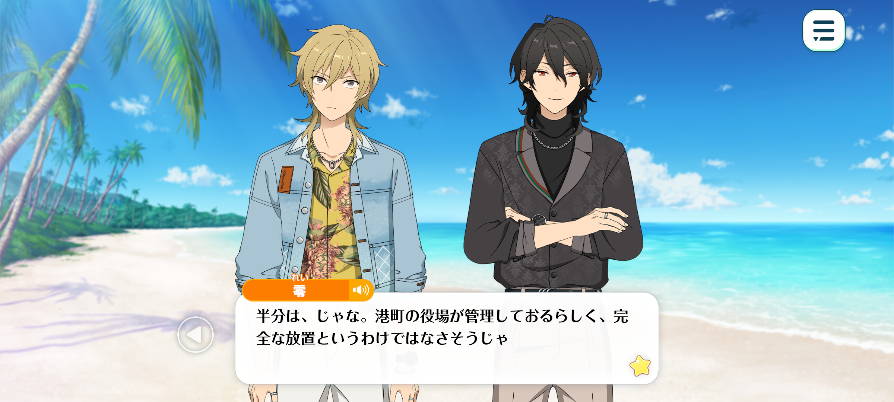
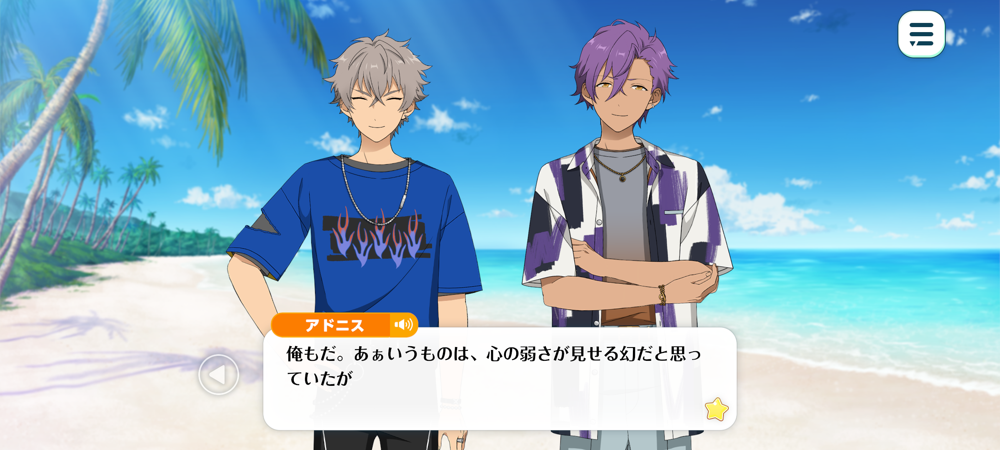
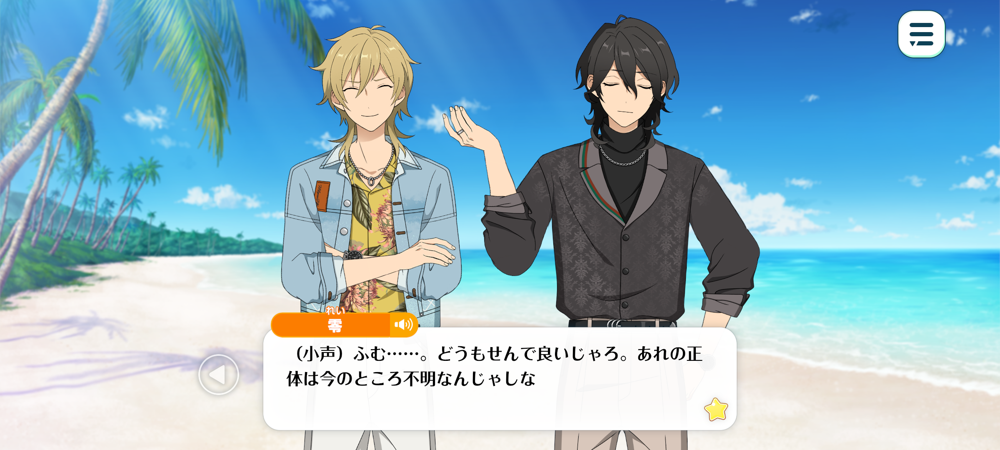
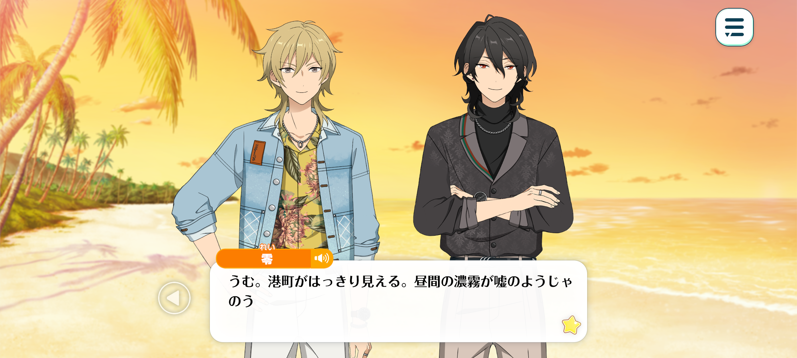
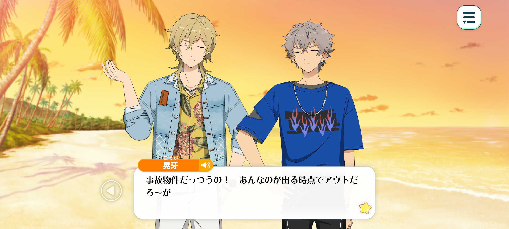
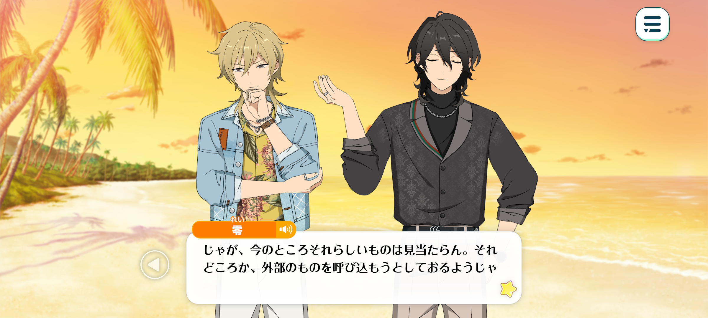

Velvet Ship
Haul Home The Sheets / Chapter 1


Time: Back to the remote island beyond the mist

Kaoru: ...Phew. We actually made it, somehow.
Well done, everyone! I’m glad we didn’t run aground or capsize along the way~
And thank goodness, too. We were lucky enough to have this boat lent to us as a favour, and I’d really rather not have to relive that whole stranded-on-a-deserted-island ordeal again.
...Wait a sec. Rei-kun, remind me, is this island deserted?
Rei: Well, that depends on what you mean by deserted. The town still maintains it, so I wouldn’t say it's been entirely abandoned.
As I recall, they told us that roughly half of the island is kept in good condition. Look over there, for instance. Do you see that little hut?
Kaoru: Oh yeah, I see it! It has “Disaster Prevention Warehouse” written on the side. Guess they wouldn't let us use the island if nobody was keeping an eye on it.
Still though...
Koga + Adonis: ...
Kaoru: Hey, you two, you okay? You haven’t said anything in a while?
Don’t tell me that the ghost ship has scared you that much? Ahaha, just kidding around ♪
Koga: ...Tha–
Kaoru: ‘Tha’?
Koga: THAT WAS SO FUCKIN’ COOL! I can’t believe it, we just saw a real PIRATE SHIP!
I mean, okay, technically it was a ghost ship. BUT WHO CARES!?
That’s so fuckin’ sick, man! I’ve never seen anythin’ like that in my entire life! I’ve got goosebumps.

Adonis: I feel the same way. I had always assumed that such phenomena were merely the product of an overactive imagination.
To think ghost ships truly exist. Japan really is an amazing country.
Kaoru: I don’t think this has much to do with Japan, though…
Adonis: ...? What do you mean, Hakaze-senpai?
Kaoru: Nah, don’t worry about it.
(Whispering) Rei-kun, what are we gonna do? They genuinely believe they saw a ghost ship.

Rei: (Whispering) It would appear so… Though, for the time being, I see no reason for us to intervene. After all, the true nature of that mysterious vessel remains shrouded in uncertainty.
—In any case, whether by some benevolent twist of fate or mere coincidence, we ought to count ourselves fortunate to have arrived here safe and sound.
Koga: Haa? It wasn’t a coincidence! That ghost ship led us here!
If this were a movie, the second the sun goes down, I’m tellin’ ya, all those ghost sailors’d come swarmin’ off the ship and attack us!
Kaoru: Yup, probably, but let’s save that discussion for later on, ‘kay? ♪
Honestly, I’m curious about what we actually saw out there, too. But there’s no way we’re gonna figure it out right now, so…
Anyway, let’s have a look around the island. That’s what we came here for in the first place, right?
Rei: Indeed. We can hardly set sail for home without first acquainting ourselves with our surroundings.
Adonis: I agree. I’d like to search the island to make sure it’s safe.
I should also consider how best to respond if a ghost happens to appear during our live.
Kaoru: Ahaha. I’m really hoping it doesn’t come to that.
Time: A few hours later

Kaoru: ...Huh. I didn’t even notice the fog had cleared.
Rei: We can see the town quite clearly from here now. And to think that, only this morning, the fog was so thick we could scarcely see what lay before us.
Let us hope we shan’t be greeted by its return on our journey home.
Kaoru: Hey~, don’t say things like that with such a serious expression! You’re gonna jinx us just by saying it out loud, you know?
Rei: Kukuku. And who knows? Perhaps a ghost ship might even grace us with its presence once more... ♪
Kaoru: Rei-kun, you’re doing it on purpose now. Seriously, not cool dude~.
Adonis: ...I took a full lap around the island, and it was much nicer than I expected.
Kaoru: Yup. Guess it’s true that only half of the island’s been developed.
There’s a proper event space right in the middle, and there are gazebos dotted around where people can take a break.
Even the beach is lovely. Looks like they’ve deliberately left this part untouched to preserve its natural beauty. And there’s not a single piece of rubbish anywhere, either.
Honestly, this place is pretty sweet. This might be the spot… but there’s just one problem…
Adonis: The ghost ship?
Kaoru: Yeah. I mean, it certainly fits the pirate theme we’re going for.
But if things like that keep happening, it’ll ruin the whole event, no matter how perfect everything else is.

Koga: This place is basically haunted real estate, for fuck’s sake! The second a ghost ship shows up, it’s already a deal-breaker!
Rei: ...If only the ghost ship had truly existed.
Koga: Haa? What the hell are you talkin’ about’? You saw it too, didn’t you?
That huge-ass ship came sailing right outta the fog. How the hell could something like that have been fake?
Adonis: I agree. I most certainly saw it as well. There’s no way it could have been an illusion or something similar.
Koga: Right!? It was real, there’s no way in hell it wasn’t!
Kaoru: It's not that I don't believe what you guys saw.
But... I dunno. Something about this place just doesn't sit right with me.
If this island really were haunted, you'd expect there to be some kind of… lingering eeriness to it, wouldn't you?
But after walking around the place, everything feels strangely peaceful. Almost as though what we saw out there was nothing more than a dream.

Rei: A most astute observation.
Were this island truly a haunt of supernatural phenomena, one would imagine the townspeople would give it a wide berth. At the very least, surely they would have erected some manner of warning sign to keep unwary visitors away.
Even if the tale had long since faded into the mists of legend, one might reasonably expect some trace of its existence to remain. A monument, perhaps, or a shrine dedicated to the spirits said to dwell here…
And yet, we have found nothing of the sort. On the contrary, it would seem the town is going out of its way to welcome visitors from far and wide. Something about this state of affairs strikes me as rather peculiar.
If we are to ensure that our appreciation event proceeds without incident, we cannot simply turn a blind eye to such an unsettling mystery. We must unravel it, and discover what truth lies hidden beneath this curious affair.
...That being said, I fear we have gleaned all we can from this island itself.
Let us return to the town and begin our investigation in earnest.
Besides, we have now witnessed the so-called ghost ship with our very own eyes. Surely, that experience alone will shed an entirely new light upon the tale.